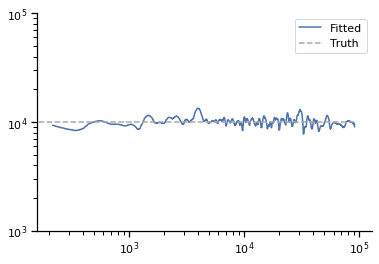
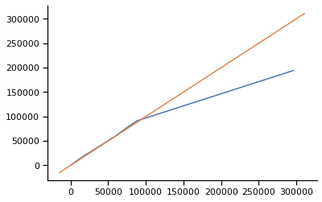
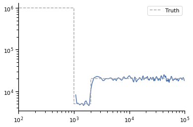
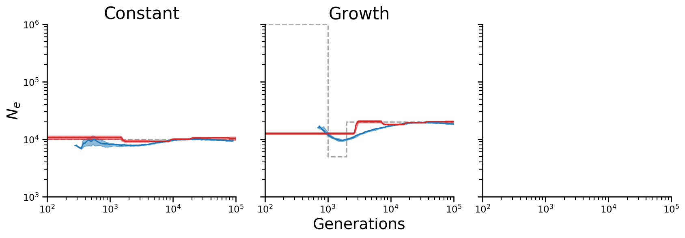
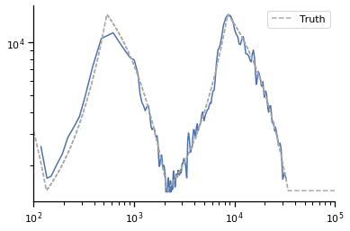
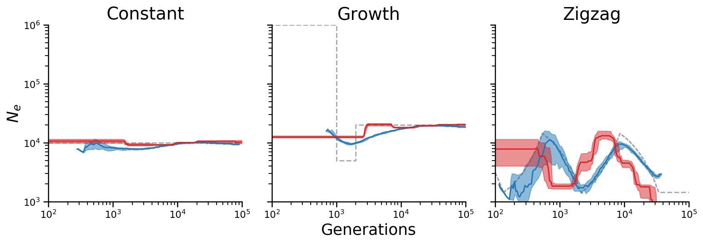
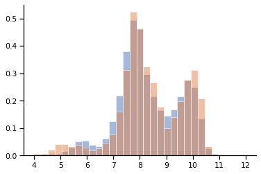

Comparison of XSMC and PSMC¶
Setup code¶
[2]:
import xsmc
import xsmc.sampler
from xsmc import Segmentation
from xsmc.supporting.plotting import *
from xsmc.supporting.kde_ne import kde_ne
import matplotlib.pyplot as plt
import numpy as np
import msprime as msp
from scipy.interpolate import PPoly
import tskit
from concurrent.futures import ProcessPoolExecutor, ThreadPoolExecutor
import logging
import os.path
logging.getLogger("xsmc").setLevel(logging.INFO)
[3]:
# Ensure reproducibility in posterior sampling
np.random.seed(1)
def seed():
return np.random.randint(1, np.iinfo(np.int32).max)
The xsmc.supporting.psmc module runs Li & Durbin’s original PSMC method on tree sequence data.
[4]:
!pip install git+https://github.com/terhorst/mspsmc@e583e196f
Collecting git+https://github.com/terhorst/mspsmc@e583e196f
Cloning https://github.com/terhorst/mspsmc (to revision e583e196f) to /tmp/pip-req-build-pb02_nr8
WARNING: Did not find branch or tag 'e583e196f', assuming revision or ref.
Requirement already satisfied: scipy in /home/terhorst/opt/py37/lib/python3.7/site-packages (from mspsmc==0.1.0) (1.4.1)
Requirement already satisfied: numpy in /home/terhorst/opt/py37/lib/python3.7/site-packages (from mspsmc==0.1.0) (1.18.2)
Requirement already satisfied: tskit in /home/terhorst/opt/py37/lib/python3.7/site-packages (from mspsmc==0.1.0) (0.3.1)
Requirement already satisfied: svgwrite in /home/terhorst/opt/py37/lib/python3.7/site-packages (from tskit->mspsmc==0.1.0) (1.3.1)
Requirement already satisfied: jsonschema in /home/terhorst/opt/py37/lib/python3.7/site-packages (from tskit->mspsmc==0.1.0) (3.1.1)
Requirement already satisfied: attrs>=19.1.0 in /home/terhorst/opt/py37/lib/python3.7/site-packages (from tskit->mspsmc==0.1.0) (19.3.0)
Requirement already satisfied: h5py in /home/terhorst/opt/py37/lib/python3.7/site-packages (from tskit->mspsmc==0.1.0) (2.10.0)
Requirement already satisfied: pyparsing>=2.0.1 in /home/terhorst/opt/py37/lib/python3.7/site-packages (from svgwrite->tskit->mspsmc==0.1.0) (2.4.2)
Requirement already satisfied: pyrsistent>=0.14.0 in /home/terhorst/opt/py37/lib/python3.7/site-packages (from jsonschema->tskit->mspsmc==0.1.0) (0.15.4)
Requirement already satisfied: importlib-metadata in /home/terhorst/opt/py37/lib/python3.7/site-packages (from jsonschema->tskit->mspsmc==0.1.0) (0.23)
Requirement already satisfied: six>=1.11.0 in /home/terhorst/opt/py37/lib/python3.7/site-packages (from jsonschema->tskit->mspsmc==0.1.0) (1.14.0)
Requirement already satisfied: setuptools in /home/terhorst/opt/py37/lib/python3.7/site-packages (from jsonschema->tskit->mspsmc==0.1.0) (49.3.2)
Requirement already satisfied: zipp>=0.5 in /home/terhorst/opt/py37/lib/python3.7/site-packages (from importlib-metadata->jsonschema->tskit->mspsmc==0.1.0) (0.6.0)
Requirement already satisfied: more-itertools in /home/terhorst/opt/py37/lib/python3.7/site-packages (from zipp>=0.5->importlib-metadata->jsonschema->tskit->mspsmc==0.1.0) (7.2.0)
Building wheels for collected packages: mspsmc
Building wheel for mspsmc (setup.py) ... done
Created wheel for mspsmc: filename=mspsmc-0.1.0-py2.py3-none-any.whl size=5757 sha256=2a985c3436b68c165ed595cb668e342f05b6ac56d53beb7c5b3f391a885c716e
Stored in directory: /tmp/pip-ephem-wheel-cache-ughf1bw5/wheels/af/38/87/3eee2ca03eb580f4df9e22215d1e0ff5a8914f16a45cf26f93
Successfully built mspsmc
Installing collected packages: mspsmc
Successfully installed mspsmc-0.1.0
WARNING: You are using pip version 20.2.3; however, version 20.2.4 is available.
You should consider upgrading via the '/home/terhorst/opt/py37/bin/python3 -m pip install --upgrade pip' command.
[7]:
# psmc code
import os
os.environ["PSMC_PATH"] = "/scratch/psmc/psmc" # update as needed if running locally
import mspsmc
def run_psmc(reps, rho_over_theta=1.0):
def f(data, *args):
return mspsmc.msPSMC([(data, (0, 1))]).estimate(*args)
with ThreadPoolExecutor() as p:
futs = [p.submit(f, data, "-r", 1.0 / rho_over_theta) for data in reps]
res = [f.result() for f in futs]
rescaled = []
for r in res:
# See Appendix I of https://github.com/lh3/psmc/blob/master/README
N0 = r.theta / (4 * mu) / 100
rescaled.append(r.Ne.rescale(N0))
return rescaled
mspsmc.__psmc__version__
[7]:
'0.6.5-r67'
[8]:
# other supporting functions
L = int(5e7) # length of simulated chromosome
mu = 1.4e-8 # mutation rate/bp/gen
M = 25 # number of replicates
def parallel_sample(reps, j=100, k=int(L / 50_000), rho_over_theta=1.0):
xs = [
xsmc.XSMC(data, focal=0, panel=[1], rho_over_theta=rho_over_theta)
for data in reps
]
with ThreadPoolExecutor() as p:
futs = [
p.submit(x.sample_heights, j=j, k=k, seed=seed()) for i, x in enumerate(xs)
]
return np.array(
[f.result() * 2 * x.theta / (4 * mu) for f, x in zip(futs, xs)]
) # rescale each sampled path by 2N0 so that segment heights are in generations
def parallel_sample0(reps, j=100, k=int(L / 50_000), rho_over_theta=1.0):
xs = [
xsmc.XSMC(data, focal=0, panel=[1], rho_over_theta=rho_over_theta)
for data in reps
]
with ProcessPoolExecutor() as p:
futs = [
p.submit(x.sample, k=j, seed=seed(), prime=True) for i, x in enumerate(xs)
]
paths = [
[p.rescale(2 * x.theta / (4 * mu)) for p in f.result()]
for f, x in zip(futs, xs)
] # rescale each sampled path by 2N0 so that segment heights are in generations
return np.array([[p(np.random.uniform(0, L, k)) for p in path] for path in paths])
def sim_data(de, **kwargs):
d = dict(
sample_size=2,
recombination_rate=1.4e-8,
mutation_rate=mu,
length=L,
demographic_events=de,
)
d.update(kwargs)
with ThreadPoolExecutor() as p:
futs = [p.submit(msp.simulate, **d, random_seed=seed()) for i in range(M)]
return [f.result() for f in futs]
def summarize_lines(xys, x0):
"summarize a collection of lines by plotting their median and IQR"
y0 = []
for x, y in xys:
f = interp1d(
x, y, bounds_error=False
) # interpolate linearly to a common set of points
y0.append(f(x0))
return np.nanquantile(y0, [0.5, 0.25, 0.75], axis=0) # median, q25, q75
def plot_summary(ax, lines, x, label=None, **kwargs):
all_x = np.concatenate([l[0] for l in lines]).reshape(-1)
m, q25, q75 = summarize_lines(lines, x)
ax.plot(x, m, label=label, **kwargs)
ax.fill_between(x, q25, q75, **kwargs, alpha=0.5)
def plot_combined(lines_psmc, lines_xsmc, truth, ax=None):
if ax is None:
ax = plt.gca()
x = np.geomspace(1e2, 1e6, 200)
for lines, label, color in zip(
[lines_xsmc, lines_psmc], ["XSMC", "PSMC"], ["tab:blue", "tab:red"]
):
# for i, (x, y) in enumerate(lines):
# ax.plot(
# x,
# y,
# color=color,
# label=label if i == 0 else None,
# alpha=5.0 / len(lines),
# )
plot_summary(ax, lines, x, label=label, color=color)
ax.plot(
*truth, "--", color="darkgrey", label="Truth", drawstyle="steps-post", zorder=0
)
ax.set_xscale("log")
ax.set_yscale("log")
ax.set_xlim(1e2, 1e5)
ax.set_ylim(1e3, 1e6)
[9]:
from collections import Counter
from scipy.signal import convolve
from xsmc.supporting.kde_ne import *
def parallel_kde(sampled_heights, **kwargs):
with ProcessPoolExecutor() as p:
futs = [p.submit(kde_ne, h.reshape(-1), **kwargs) for h in sampled_heights]
return [(f.result()[0], f.result()[1] / 2) for f in futs]
Constant effective population size¶
The simplest case. First we check the estimator on “perfect” data, that is i.i.d. samples from the true distribution:
[10]:
de = [msp.PopulationParametersChange(time=0, initial_size=1e4)]
Perfect data¶
Verify the estimator on “perfect” data:
[11]:
true_data = np.array(
[
next(sim.trees()).get_time(2)
for sim in msp.simulate(
num_replicates=10000, demographic_events=de, sample_size=2
)
]
)
x, y = kde_ne(true_data)
plt.plot(x, y / 2, label="Fitted")
plt.plot(plt.xlim(), [1e4] * 2, "--", color="darkgrey", label="Truth")
plt.xscale("log")
plt.yscale("log")
plt.legend()
plt.ylim(1e3, 1e5)
[11]:
(1000.0, 100000.0)
2020-10-21 11:15:22,933 WARNING matplotlib.font_manager MainThread findfont: Font family ['sans-serif'] not found. Falling back to DejaVu Sans.

XSMC¶
Next we simulate data and sample from the posterior instead.
[12]:
data = sim_data(de)
len(data)
[12]:
25
[13]:
sampled_heights = parallel_sample(data)
sampled_heights.shape
[13]:
(25, 100, 1000)
[14]:
lines_xsmc = parallel_kde(sampled_heights)
[15]:
# Diagnostic
q = np.linspace(0, 1.0, 100)
plt.plot(np.quantile(sampled_heights.reshape(-1), q), np.quantile(true_data, q))
plt.plot(plt.xlim(), plt.xlim())
[15]:
[<matplotlib.lines.Line2D at 0x7f0a45698bd0>]

PSMC¶
[16]:
psmc_out = run_psmc(data)
[17]:
x_psmc = np.geomspace(1e2, 1e5, 100)
lines_psmc = [(x_psmc, r(x_psmc)) for r in psmc_out]
Combined plot for paper¶
[18]:
truth = ([1e2, 1e6], [1e4, 1e4])
fig, axs = plt.subplots(ncols=3, figsize=(12, 4.5), sharex=True, sharey=True, dpi=150)
plot_combined(lines_psmc, lines_xsmc, truth, axs[0])
# a.legend()
axs[0].set_xlim(1e2, 1e5)
axs[0].set_ylim(1e3, 1e6)
axs[0].set_title("Constant")
fig.add_subplot(111, frameon=False)
plt.tick_params(labelcolor="none", top=False, bottom=False, left=False, right=False)
# plt.xlabel("common X")
# plt.ylabel("common Y")
plt.xlabel("Generations")
plt.ylabel("$N_e$")
plt.tight_layout(pad=1.5)
/home/terhorst/opt/py37/lib/python3.7/site-packages/numpy/lib/nanfunctions.py:1392: RuntimeWarning: All-NaN slice encountered
overwrite_input, interpolation)
2020-10-21 11:16:47,680 WARNING matplotlib.font_manager MainThread findfont: Font family ['sans-serif'] not found. Falling back to DejaVu Sans.
2020-10-21 11:16:47,895 WARNING matplotlib.font_manager MainThread findfont: Font family ['sans-serif'] not found. Falling back to DejaVu Sans.

Recent growth¶
Perfect data¶
[19]:
de = [
msp.PopulationParametersChange(time=0, initial_size=1e6),
msp.PopulationParametersChange(time=1e3, initial_size=5e3),
msp.PopulationParametersChange(time=2e3, initial_size=2e4),
]
[20]:
true_data = np.array(
[
next(sim.trees()).get_time(2)
for sim in msp.simulate(
num_replicates=10000, demographic_events=de, sample_size=2, Ne=1
)
]
)
[21]:
x, y = kde_ne(true_data)
plt.plot(x[::50], y[::50] / 2) # downsample the curves to make plotting faster
truth = ([0, 1e3, 2e3, 1e5], [1e6, 5e3, 2e4, 2e4])
plt.plot(
*truth, "--", color="darkgrey", label="Truth", drawstyle="steps-post",
)
plt.xscale("log")
plt.yscale("log")
plt.legend()
plt.xlim(1e2, 1e5)
[21]:
(100.0, 100000.0)

XSMC¶
[22]:
data = sim_data(de)
[23]:
sampled_heights = parallel_sample(data)
[24]:
lines_xsmc = parallel_kde(sampled_heights)
Combined plot for paper¶
[27]:
plot_combined(lines_psmc, lines_xsmc, truth, axs[1])
axs[1].set_title("Growth")
fig
[27]:

Zigzag¶
[28]:
import stdpopsim
species = stdpopsim.get_species("HomSap")
model = species.get_demographic_model("Zigzag_1S14")
de = [
msp.PopulationParametersChange(time=0, initial_size=14312)
] + model.demographic_events
Perfect data¶
[29]:
true_data = np.array(
[
next(sim.trees()).get_time(2)
for sim in msp.simulate(
num_replicates=10000, demographic_events=de, sample_size=2,
)
]
)
[30]:
x, y = kde_ne(true_data)
plt.plot(x[::50], y[::50] / 2) # downsample the curves to make plotting faster
f = plot_de(de, 14312)
x_zz = np.geomspace(1e2, 1e6, 1000)
truth = (x_zz, f(x_zz))
plt.plot(
*truth, "--", color="darkgrey", label="Truth", drawstyle="steps-post",
)
plt.xscale("log")
plt.yscale("log")
plt.legend()
plt.xlim(1e2, 1e5)
[30]:
(100.0, 100000.0)

XSMC¶
[31]:
data = sim_data(de, recombination_rate=1e-9)
[32]:
sampled_heights = parallel_sample(data, rho_over_theta=1e-9 / mu)
[33]:
lines_xsmc = parallel_kde(sampled_heights)
PSMC¶
[34]:
psmc_out = run_psmc(data, rho_over_theta=1e-9 / mu)
[35]:
lines_psmc = [(x_psmc, r(x_psmc)) for r in psmc_out]
Combined plot for paper¶
[36]:
plot_combined(lines_psmc, lines_xsmc, truth, axs[2])
axs[2].set_title("Zigzag")
fig
[36]:

[37]:
axs[0].legend()
[37]:
<matplotlib.legend.Legend at 0x7f09ec5b6050>
[38]:
fig.savefig(os.path.join(PAPER_ROOT, "figures", "xsmc_psmc.pdf"))
Additional diagnostics¶
[39]:
b = np.linspace(4, 12, 32)
for d in np.array(sampled_heights)[..., 0], true_data:
plt.hist(np.log(d).reshape(-1), bins=b, density=True, alpha=0.5)
